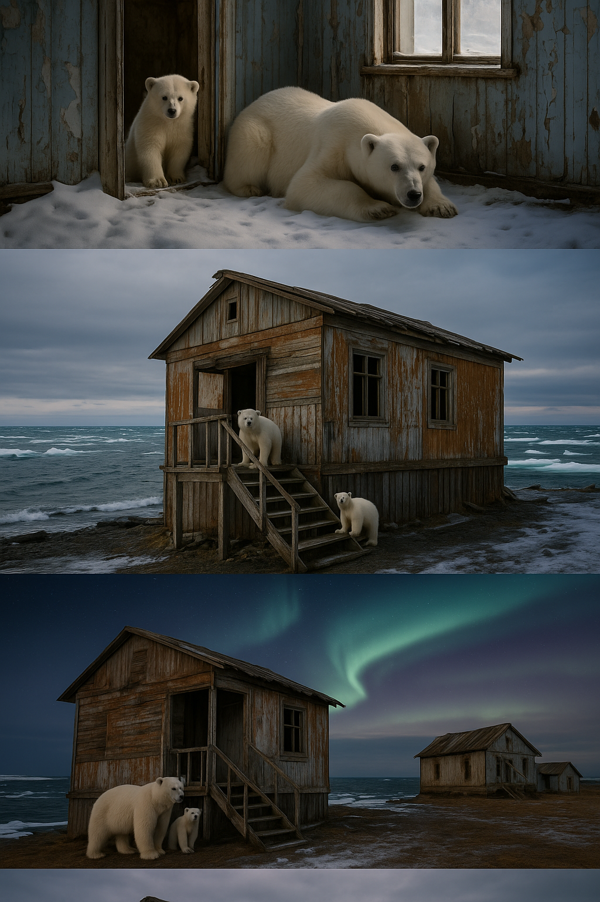

Isbjørnene på Koljutsjinøya – rapport fra en forlatt forskningsstasjon
En flokk på rundt tjue isbjørner har okkupert en forlatt forskningsstasjon i det østlige Arktis. Dronebilder fra september viser hvordan bjørnene har gjort bygningene til sitt hjem.
Han flyr dronen lavt over Koljutsjinøya, en liten øy i Tsjuktsjerhavet, utenfor nordkysten til Chukotka-halvøya i Russland. Avstanden til fastlandet er om lag elleve kilometer. Nedenfor ham ligger restene av en sovjetisk forsknings- og værobservasjonsstasjon som ble lagt ned etter Sovjetunionens fall. Stasjonen ble i praksis forlatt tidlig på 1990-tallet.
I september 2025 tar han opp bilder og video av øya. Fotografen og droneføreren, Vadim Makhorov, dokumenterer en uvanlig scene: en flokk isbjørner som beveger seg mellom de forlatte bygningene. Gjennom kameralinsen ser han dem på verandaer, ved døråpninger og i vinduer. Noen sitter i skyggen, andre ser ut mot havet. Ifølge observasjonene ble rundt tjue dyr sett på én gang.
Bjørnene ser ut til å ha gjort den gamle stasjonen til sitt hjem. De bruker husene som ly mot vind og vær, beveger seg mellom rommene med en slags ro, som om de har overtatt stedet etter oss. Makhorov beskriver hvordan bjørnene «ser disse husene som ly og skjul», og hvordan de virker vant til strukturen, nesten som om de forstår hva bygningene kan brukes til.
Dyreliv og økologisk sammenheng
Koljutsjinøya er kjent for sitt rike dyreliv. Langs kysten samles store kolonier av hvalross, og fuglefjellene huser arter som polarlomvi, krykkje og teist. Øya er et lite, men tett sammenvevd økosystem der næringskjedene fortsatt fungerer – et sted der isbjørnene finner både mat og skjul.
Men møtet mellom dyr og menneskeskapte strukturer peker på noe større. Når havisen smelter og strandlinjene forandres, mister bjørnene deler av sine tradisjonelle jaktområder. De tvinges nærmere land, og der finner de restene av oss – hytter, anlegg, stasjoner og vrak. Disse blir midlertidige skjul, midlertidige hjem.
Makhorov sier det enkelt: «Bjørner er ikke fremmed for komfort og trivsel.» Ordene beskriver mer enn et bilde. De beskriver en tilpasning – og en situasjon vi selv har skapt.
Et omvendt møte
Det finnes en symbolsk dimensjon i dette. I flere hundre år har mennesker trengt stadig lenger inn i villmarken: bygget forskningsstasjoner, gruveleirer, militære utposter og små bosetninger i naturens ytterkanter. Nå, når klimaet endrer seg og vi trekker oss tilbake, flytter naturen inn igjen. Ikke som hevn, men som en stille påminnelse om at grensene alltid har vært flytende.
Isbjørnene på Koljutsjinøya er et konkret bilde på en større prosess: arter som presses inn i menneskelige rom når deres egne rom forsvinner. I Arktis skjer det i ruiner og værstasjoner; andre steder finner dyr nye tilfluktssteder i byer, søppelfyllinger og havner. Vi trenger inn i deres territorier, og de tilpasser seg det vi etterlater.
Hendelsen på øya er derfor mer enn et naturfotografi. Det er en fortelling om hvordan økosystemene ommøbleres når klimaet forandres, og om hvordan dyr tvinges til å bruke det mennesket ikke lenger har bruk for. Den forlatte stasjonen er ikke lenger et symbol på forskningsiver, men på naturens evne til å overta – stille, tålmodig, uavhengig av oss.